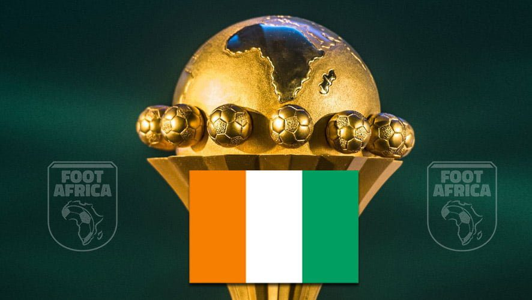

.jpg)
Symbole de l'espoir national des Etats d'Afrique aux independances, le Football africain s'est radicalement transformé. Pour comprendre la dynamique de cette prestigieuse compétition debutant le samedi 13 Janvier 2024, regroupant 24 équipes et célébrant sa 34 ème edition, je vous invite a parcourir les lignes qui suivent.

Douze ans après la fin d'une guerre civile qui a divisé le pays en deux, la Côte d'Ivoire acceuillera les meilleurs footballeurs africains pour la première fois depuis 1984.
Tout les stades sont neufs ou ont fait l'objet de rénovation avant la CAN, des aéroports, des routes, des hôpitaux et des hôtels ont été construits ou rénovés, le gouvernement dépensant un milliard de dollars américains pour des projets d'infrastructure à travers le pays.
Six stades ont été utilisés dans cinq villes hôtes dont deux à Abidjan a savoir le stade Alassane Ouattara avec une capacité de 60.000 places et le stade Felix Houphouët-Boigny avec une capacité de 33.000 places, le stade Charles Konan Banny de Yamoussoukro avec 20.000 places suivi du stade de la Paix à Bouaké pouvant acceuillir jusqu'à 40.000 places, ensuite le stade Amadou Gon Coulibaly de Korhogo ayant une capacité de 20.000 places et enfin
le stade Laurent Pokou de San Pedro avec 20.000 places disponibles.
Trois hommes ont été d'un rôle clé dans le sacre ivoirien et leurs destins atypiques rendent l'histoire encore plus belle.
Emerse Faé a commencé la compétition en tant qu'entraineur adjoint et l'a terminée au poste de sélectionneur.il n'a eu aucun mal à gérer cette promotion inattendue, connaissant quatre succès en autant de rencontres pour sa premiere experience de coach
numéro 1 au plus haut niveau.
Le buteur décisif en finale a vécu un moment terrible quand un cancer des testicules lui a été diagnostiqué en 2022. Suites à six mois de traitements avec notamment deux operations et quatre séances de chimiothérapie, l'attaquant du Borussia Dortmund est revenu à son meilleur niveau, devenant même le héros de la demi-finale et la finale en marquant le but de la victoire sur un centre éclairc de Simon Adingra élu meilleur jeune joueur de la CAN.
Clique ici:Les trois soldats du mérite ivoiriens.
Qui donnait cher de la peau des Elephants ivoiriens
au soir du 22 Janvier après une déroute face à la Guinnée Equatoriale(0-4), la CAN semblait se terminer dès la phase de poules pour le pays hôte. Contraint d'espérer un scénario favorable dans les autres groupes pour se qualifier en huitiemes de finales parmi les six
meilleurs troisiemes de groupe avec Jean-Louis Gasset ayant demissionné, le pays hôte est revenu de nulle part pour remporter le
troisieme titre continental de son histoire en battant l'ex tenant du titre le Sénégal par cinq tirs au but contre quatre, le Mali par deux buts contre un ensuite la RDC par un but contre zéro et enfin
le Nigeria en final par deux buts contre un.
Je vous invite a partager la joie de nos frères ivoiriens en cliquant ici:
Il est rare de voir un entraîneur faire l'éloge de l'utilisation de la technologie lorsque celle-ci va à l'encontre de son équipe. C'est pourtant ce qu'a fait José Peseiro, le sélectionneur du Nigéria, en revenant sur un extraordinaire rebondissement de la demi-finale. Les
Super Eagles
pensaient mener 2-0 à la 85e minute grâce à Victor Osimhen, mais l'Afrique du sud a bénéficié d'un penalty pour une faute commise dans la surface de reparation.
Les contrôles de l'arbitre assistant vidéo (VAR) ont été utilisés judicieusement et de manière extrêmement efficace tout au long du tournoi.
La phase finale de 2023 a enregistré un record de 119 buts, soit une moyenne de 2,29 buts par match. Ce chiffre n'a jamais été dépasseé depuis 2012 (2,38 buts par match). Selon la caf,
plus de deux milliards de personnes ont regardé le tournoi en direct à la télévision, ce qui en fait de loin la phase finale de la Coupe des Nations
la plus regardée de l'histoire avec 173 territoires à travers le monde qui ont retransmis la finale. Les buts tardifs
ont été une caractéristique particulière, le groupee B ayant à lui seul inscrit plus de buts après la 89e minute que l'ensemble du tournoi de 2021.
Clique ici:Evolution des supporters ivoiriens.
Pour comprendre l'empleur de ce rush médiatique sur la 34e édition de la Coupe des Nations
, il faut savoir que ce chiffre représente 90% de plus que l'édition 2021 au Camerroun. La Confédération Africaine de Football (CAF) a reçue plus de 5000 demandes d'accréditation des medias pour le tournoi CAF TotalEnergies Côte d'Ivoire 2023,
soit 90% de plus que l'édition 2021 au Cameroun
, a fait savoir l'intance présidée par le sud-africain Patrice Motsepe.
Dans le meme communiqué, la Confederation Africaine de Football donne quelques détails sur cet engagement d'équité.
Clique ici:Gros intérêt des medias dans la diffusion de la compétition.
La guinnée équatoriale a battu le pays hôte et a terminé devant le Nigéria dans le groupe A. Dans le même temps, le Cap-Vert a remporté ses matchs de poules devant des adversaires plus illustres et présentés comme favoris de cette CAN. La Namibie et l'Angola, qui faisaient partie des quatre équipes les moins bien classées de la phase de groupe, ont atteint les huitièmes de finale, tandis que la Mauritanie a remporté sa première victoire en phase finale.
L'Afrique du Sud a battu le Maroc sur son chemin vers le dernier carré. Ces résultats et performances surprenants ne sont pas le fruit du hazard, selon les observateurs sportifs.
Les Black Stars
ont été éliminés de la phase de groupe de façon decevante et spectaculaire, en offrant au Cap-Vert un but à la 92e minute et en permettant au Mozambique de marquer deux fois dans le temps additionnel de la seconde mi-temps.
Le sélectionneur Chris Hughton a été démis de ses fonctions, après s'être efforcé d'atténuer la pression qui pesait sur son équipe pour qu'elle remporte le premier triomphe de son pays depuis 1982.
Il y'avait eu des finalistes nord-africains lors des trois tournois précédents, et le fait qu'aucun de leurs n'ait atteint les quarts de finale a donc été une grande surprise.
Clique ici:Grands favoris de la 34e édition de la CAN.
Court métrage sur quatre entraineurs ayant eu un tournoi compliqué:
Si Hughton voulait se consoler d'avoir été la première victime de la CAN, sept de ses 23 homologues qui avaient commmencé la phase finale étaient partis avant la fin du tournoi.
L'algérien Djamel Belmadi, le tunisien Jalel kadri et l'egyptien Rui Vitoria ont également fait les frais de tournois mediocres.
Tom Saintfiet a démissionné de son poste de sélectionneur de la Gambie, tandis que la Guinée-Bissau et le Burkina Faso ont décidé de ne pas renouveler les contrats de Baciro Cande et Hubert Velud respectivement.
Par ailleurs, Adel Amrouche a été suspendu par la Tanzanie après avoir reçu une suspension de huit matchs de la part de la CAF.
La Coupe des Nations ou CAN , est la plus prestigieuse des compétitions africaine de football du continent africain. Elle se déroule tous les deux ans et contribue à la cohésion, au partage et la paix sur le continent africain.
©B. N. LOUIS JEFFREY